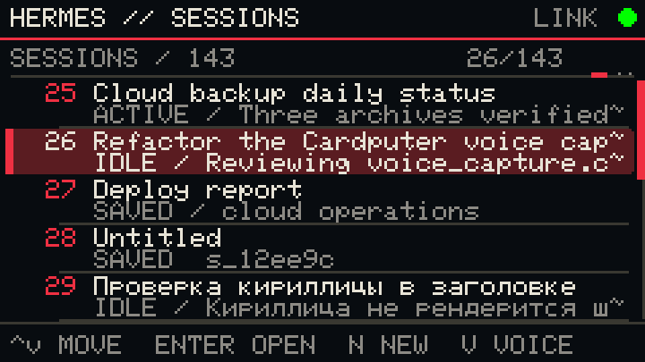
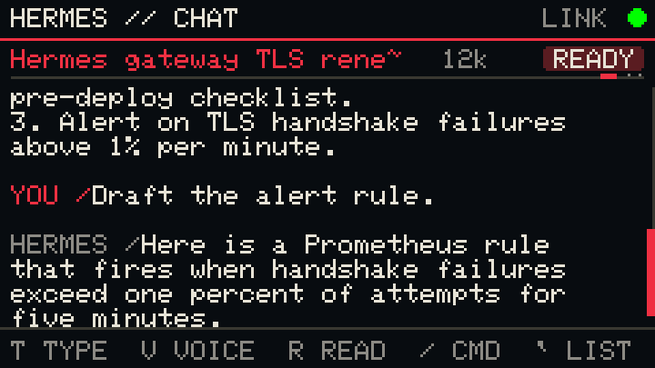
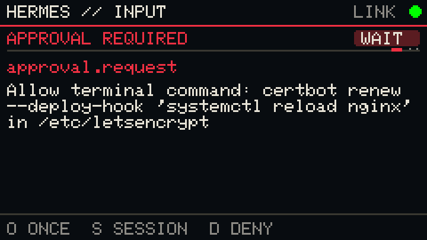
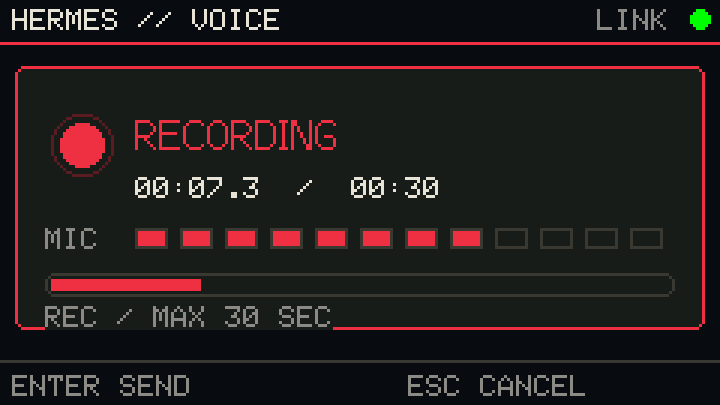
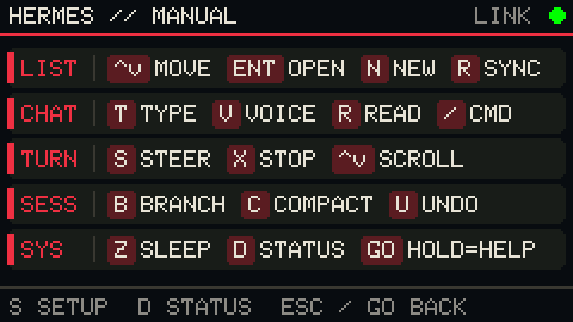
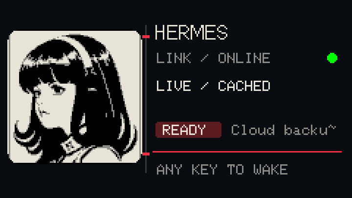
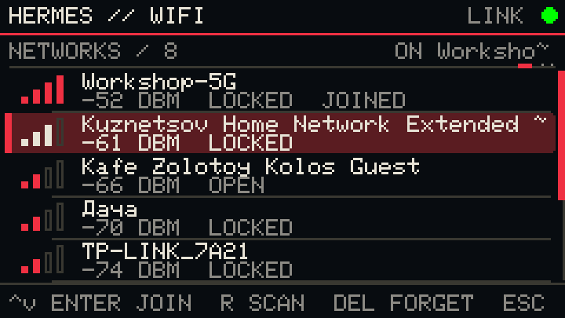
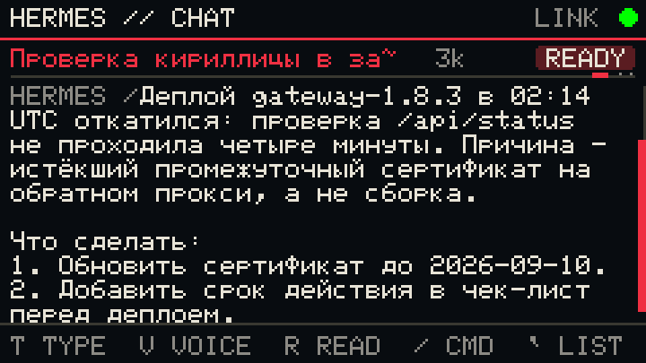
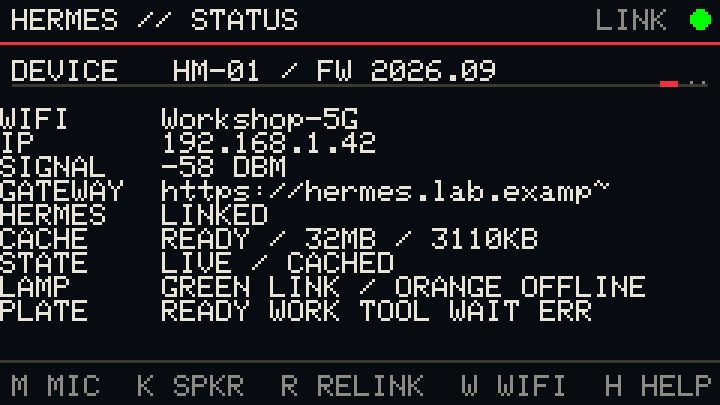

Session control
Browse, create, resume, refresh, and cancel a slow load from a compact session deck.
Native Hermes link / ESP32-S3
A direct, purpose-built client for Nous Research Hermes Agent on the M5Stack Cardputer ADV. Browse sessions, type or speak, read replies, and stay connected without a relay.
HERMES
ONLINE12 SESSIONSREADY01 / PURPOSE
Hermes remains the source of truth. The Cardputer authenticates with the Dashboard, requests a single-use WebSocket ticket, and opens the same live channel as a desktop client. There is no custom cloud relay and no notes recorder in the middle.
Browse, create, resume, refresh, and cancel a slow load from a compact session deck.
Start a session with speech, send voice into a thread, and hear replies with TTS.
Connecting, authenticating, loading, ready, and failed are distinct states with useful diagnostics.
SD configuration, local admin, status, sleep animation, sounds, and guarded flashing.
02 / INTERFACE
Graphite panels, warm-white text, restrained red selection, and a green link lamp. Inspired by late Shōwa and early Heisei electronics, tuned for immediate legibility.









Real frames rendered by the firmware's drawing code through the SDL preview harness, 240 x 135 pixels at 3x. Regenerate with python3 sim/render_docs.py.
03 / DIRECT LINK
Use credentials or a configured Dashboard session cookie over REST.
Exchange the session for a short-lived, single-use WS ticket.
Connect to /api/ws?ticket=… and receive live events.
Type, speak, steer, cancel, reconnect, and read the newest response.
04 / BUILD
The guarded installer checks the device, image, partition, size, and offset before it writes. Your M5Apps launcher stays where it belongs.
Safe flashing guide →01 git clone git@github.com:m0rg0t/\
cardputer-hermes-terminal.git
02 cd cardputer-hermes-terminal
platformio run
03 ./scripts/flash_hermes_m5apps.sh \
/dev/cu.usbmodemNNNNCAUTION Application image only. Never flash at 0x000000.
05 / DOCUMENTATION
HERMES / READY
Open source, hardware-first, and built for the Hermes workflow.